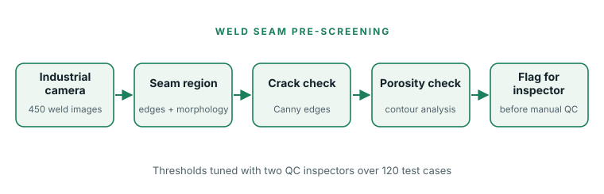

Challenge
Manual checking of robotic welding seams took 3–5 minutes per electrode holder, creating a quality-inspection bottleneck.
Industrial computer vision · Internship · Jul – Sep 2025
An image-based pre-screening tool that flags obvious defects in robotic welding seams before human inspection.

Manual checking of robotic welding seams took 3–5 minutes per electrode holder, creating a quality-inspection bottleneck.
Collected 450 weld images with the workshop’s industrial camera, wrote Python/OpenCV scripts to extract seam regions, labelled crack, porosity and incomplete-fusion examples, and with a senior engineer built the detection pipeline.
A pre-screening pipeline combining Canny edges for cracks and contour analysis for porosity, with thresholds tuned using feedback from two QC inspectors on 120 test cases.
Credits: Internship project. Company images and code are confidential and are not published.